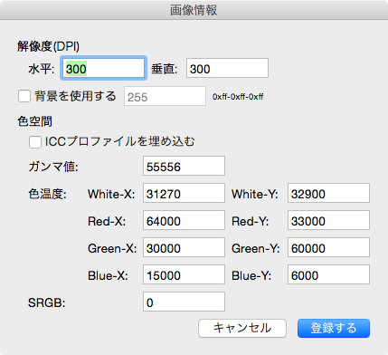
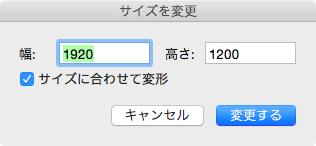

表示
表示に関する操作と画像情報に関する操作をまとめたメニューです。
| 表示関連 | |
|---|---|
| 拡大 | 主ウィンドウの表示倍率を変更（拡大）します。 |
| 縮小 | 主ウィンドウの表示倍率を変更（縮小）します。 |
| リセット | 主ウィンドウの表示倍率を１００％にリセットします。 |
| 画像情報関連 | |
| 画像情報 | 画像情報パネルを開き、画像に関する設定を行います。 |
| サイズを変更 | サイズを変更パネルを開き、画像の大きさを設定します。 |
画像情報
画像情報ダイアログでは、PNG 仕様に基づいた画像情報設定します（個々のパラメータの仔細は PNG 仕様について調べてください。その際、各々の CHUNK 名は括弧内に記述しています）。

- 解像度
水平、垂直の解像度を指定します（pHYs）。 - 背景を使用する
背景色（背景にする色番号）を指定します（bKGD）。 - 色空間
色空間を指定します。
ICCプロファイル（iCCP）を埋め込む場合、ガンマ値（gAMA）・色温度（cHRM）・SRGB（sRGB） は指定できません。
サイズを変更
サイズを変更ダイアログでは、画像サイズの変更を設定します。

水平サイズ、垂直サイズをそれぞれ指定しをクリックするとサイズを変更します。
サイズに合わせて変形をチェックすると、画素も倍率に応じて変形（変倍）します。
また、チェックしていない場合は、原点を左上としてサイズを変更します（画素は変形しません）。